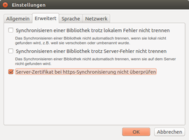

Seafile
Dieser Artikel wurde für die folgenden Ubuntu-Versionen getestet:
Ubuntu 16.04 Xenial Xerus
Zum Verständnis dieses Artikels sind folgende Seiten hilfreich:
Seafile  ist ein Cloud-Dienst und bietet ähnliche Funktionen wie z.B. Dropbox, OneDrive oder Google Drive. Der Hauptunterschied liegt darin, dass die Server-Komponente bei Bedarf auf einem frei wählbaren Rechner oder auch einem gemieteten Root- bzw. V-Server installiert werden kann. Somit kann ein potentieller Nutzer über den Standort der online gespeicherten Daten selbst entscheiden.
ist ein Cloud-Dienst und bietet ähnliche Funktionen wie z.B. Dropbox, OneDrive oder Google Drive. Der Hauptunterschied liegt darin, dass die Server-Komponente bei Bedarf auf einem frei wählbaren Rechner oder auch einem gemieteten Root- bzw. V-Server installiert werden kann. Somit kann ein potentieller Nutzer über den Standort der online gespeicherten Daten selbst entscheiden.
Man kann den Dienst auch nur als Client nutzen (entweder im Browser oder via Client-Software), ohne einen eigenen Server aufzusetzen. Sowohl die Client-Software (Windows, Linux, Mac OS X, Android und iOS) als auch die Server-Komponente (Linux und Windows) stehen unter der Open-Source-Lizenz GPLv2.
Dieser Artikel befasst sich größtenteils mit der Nutzung des grafischen Clients für Linux.
Installation¶
 Sowohl die Server-Komponente als auch das kostenlose grafische Client-Programm sind nicht in den offiziellen Paketquellen enthalten. Die Client-Installation muss daher manuell erfolgen, was auch für die Aktualisierung gilt (zum Server siehe unten).
Sowohl die Server-Komponente als auch das kostenlose grafische Client-Programm sind nicht in den offiziellen Paketquellen enthalten. Die Client-Installation muss daher manuell erfolgen, was auch für die Aktualisierung gilt (zum Server siehe unten).
Das Herunterladen der benötigten DEB-Dateien erfolgt über die offizielle Downloadseite  . Beim Download auf die eigene Systemarchitektur achten, also
. Beim Download auf die eigene Systemarchitektur achten, also i386 für 32-bit- oder amd64 für 64-bit-Systeme. Das DEB-Paket kann anschließend manuell installiert werden [1].
Experten-Info:
Zusätzlich steht der Client als vorkompilierte Kommandozeilenversion für generische Linux-Systeme zur Verfügung. Der "Terminal Client" wird als .tar.gz-Archivdatei angeboten und braucht nur in den gewünschten Ordner entpackt [2] werden.
PPA¶
Der grafische Client als auch die Kommandozeilenversion kann alternativ über ein "Personal Packages Archiv" (PPA) [3] installiert werden.
Adresszeile zum Hinzufügen des PPAs:
ppa:seafile/seafile-client
Hinweis!
Zusätzliche Fremdquellen können das System gefährden.
Ein PPA unterstützt nicht zwangsläufig alle Ubuntu-Versionen. Weitere Informationen sind der  PPA-Beschreibung des Eigentümers/Teams seafile zu entnehmen.
PPA-Beschreibung des Eigentümers/Teams seafile zu entnehmen.
Damit Pakete aus dem PPA genutzt werden können, müssen die Paketquellen neu eingelesen werden.
Nach dem Aktualisieren der Paketquellen stehen folgende Pakete zur Verfügung [4]:
seafile-gui (ppa, grafischer Client)
seafile-cli (ppa, Kommandozeilenversion)
 mit apturl
mit apturl
Paketliste zum Kopieren:
sudo apt-get install seafile-gui seafile-cli
sudo aptitude install seafile-gui seafile-cli
Funktionen von Seafile¶
Bei Ubuntu-Varianten mit einem Anwendungsmenü erfolgt der Programmstart über "Internet -> Seafile" [5]. Alternativ kann man den Befehl seafile-applet nutzen.
Die Funktionen der Seafile-Software sind vielfältig und werden aktiv weiterentwickelt. Einen Vergleich der Open-Source-Software mit proprietären Alternativen braucht die Software nicht zu scheuen. Im Folgenden sind einige ausgesuchte Merkmale aufgelistet:
Sämtliche Kommunikation zwischen Client und Server findet verschlüsselt statt
Zum Schutz der Privatsphäre der Seafile-Benutzer können Bibliotheken und Ordner mit einem Passwort geschützt werden. Diese Bibliotheken werden in verschlüsselter Form gespeichert. Nicht einmal der Systemadministrator kann dann auf diese Daten zugreifen.
Es ist möglich, mehrere Seafile-Server mit einem Client zu verbinden
Zum Schutz vor versehentlichem Löschen werden gelöschte Dateien in einen Papierkorb verschoben. Über die Versionsverwaltung können Änderungen an Dateien nachvollzogen und bei Bedarf ältere Bearbeitungsstände auch wiederhergestellt werden.
Die Zusammenarbeit von Benutzern im Team ist in sogenannten Gruppen möglich. Dateien können innerhalb des Servers an andere Benutzer oder Gruppen freigegeben werden. Es ist außerdem möglich, öffentliche Freigabelinks per E-Mail zu versenden. Es gibt auch eine Möglichkeit, Upload-Links per E-Mail zu verschicken.
Eine WebDAV-Schnittstelle ist ebenfalls vorhanden
Zwei-Faktor-Authentifizierung, z.B. mit der Google Authentificator App
Mit Seafile Version 6 ist der neue SeaDrive Client hinzugekommen. Dieser ermöglicht es, die auf dem Seafile-Server gespeicherten Daten wie ein Netzlaufwerk einzubinden. Man erhält somit Zugriff auf die Daten, ohne diese vorher synchronisieren zu müssen. Dies erleichtert den Umgang mit großen Datenmengen oder entlastet Rechner mit kleinen Festplatten.
Community Edition vs Professional Edition¶
Den Seafile-Server gibt es in zwei Versionen: eine kostenlose „Community Edition“, die Open Source und voll einsatzfähig ist. Darauf aufbauend wird auch eine kostenpflichtige „Professional Edition“ angeboten, die proprietäre Elemente enthält. Der erweiterte Funktionsumfang ist für den privaten Gebrauch nicht zwingend notwendig, jedoch sind für Teams oder Arbeitsgruppen ein paar interessante Funktionen dabei:
Realtime Bearbeitung im Team an Office-Dokumenten mit Hilfe von Office Web Apps
Automatisches Sperren von Office-Dokumenten bei lokaler Bearbeitung zur Vermeidung von Dateikonflikten
Volltextsuche
Antivirus-Prüfung
erweiterte Auditlogs
Remote-Wipe
Eine genaue Aufschlüsselung der Unterschiede findet man auf der englischen Homepage von Seafile.
Während die "Community Edition" auch unter Windows installiert werden kann, benötigt die "Professional Edition" zwingend ein Linux-System. Bis maximal drei Benutzer kann die "Professional Version" kostenlos genutzt werden, ab dem 4. Benutzer muss die Software entsprechend der englischen Preisliste mit einer jährlichen Gebühr gemietet werden. Die Preisliste ist auch interessant, wenn man nur den Cloud-Dienst nutzen möchte.
Bedienung des Seafile Clients¶
Seafile speichert die Dateien eines Benutzers in sogenannten Bibliotheken auf dem Server. Diese Dateien können dann entweder direkt per Browser über die Weboberfläche von Seafile oder per App unter iOS und Android abgerufen werden. Alternativ lässt man die Dateien per Desktop-Client auf die eigenen Geräte synchronisieren. Seafile sorgt also dafür, dass man auf allen Geräten immer Zugriff auf die letzte Dateiversion hat.
Einrichtung der Synchronisation¶
Die Synchronisation zwischen Server und PC/Notebook muss einmalig eingerichtet werden. In Seafile wird nicht ein bestimmter Ordner synchronisiert, sondern der Nutzer bestimmt selbst, wohin die eigenen Bibliotheken synchronisiert werden. Diese können im Seafile-Ordner liegen oder es wird ein beliebiger Ordner auf dem PC bestimmt.
Entweder wird über die Seafile-Weboberfläche eine neue Bibliothek eingerichtet, die im Anschluss als neuer Ordner auf dem lokalen PC erstellt oder mit einem bestehenden Ordner verknüpft wird. Dafür wählt man mit einem Rechtsklick  die Bibliothek im Client aus und wählt dann Herunterladen und Synchronisieren. Damit ist die Synchronisation zwischen Server und Client eingerichtet und Seafile beginnt mit dem Up- bzw. Download auf den gewählten Server.
die Bibliothek im Client aus und wählt dann Herunterladen und Synchronisieren. Damit ist die Synchronisation zwischen Server und Client eingerichtet und Seafile beginnt mit dem Up- bzw. Download auf den gewählten Server.
Alternativ kann der lokale Ordner per Drag-and-Drop in den Seafile Client gezogen werden. Auch dadurch kann die Synchronisation zwischen Client und Server eingerichtet werden.
Limitierung der Bandbreite¶
| Seafile Einstellungen |
Die dabei beanspruchte Bandbreite des Seafile-Clients kann über die Einstellungen angepasst werden. Der jeweilige Wert bestimmt die maximale Bandbreite, wobei die 0 keine Limitierung festlegt (siehe Abbildung).
Wiederherstellen von gelöschten oder alten Dateiversionen¶
Die Wiederherstellung von alten oder gelöschten Dateiversionen geht nur in der Seafile Weboberfläche. Hierzu wird entweder der Papierkorb einer Bibliothek oder der Dateiversionsverlauf einer einzelnen Datei aufgerufen. Wieviele Versionen und wie lange die Versionen aufbewahrt werden sollen, kann individuell für jede Bibliothek festgelegt werden.
Wozu braucht man den Seafile-Ordner im eigenen Home-Verzeichnis¶
Der Seafile-Ordner (~/Seafile/) dient in erster Linie dazu, die persönlichen Benutzerdaten zu speichern, kann aber auch für die Dateisynchronisierung genutzt werden.
Problembehebung¶
Seafile Autostart¶
| Seafile Autostart |
Eine Autostart-Option des Seafile-Clienten ist (im Gegensatz zu Windows oder Mac OS X) nicht implementiert. Zur Automatisierung kann allerdings ein Autostart-Eintrag angelegt werden. Der Befehl für den Start der grafischen Seafile-Umgebung lautet seafile-applet und kann wie in der nebenstehenden Abbildung eingetragen werden. Nun startet Seafile automatisch nach der grafischen Anmeldung.
Tray-Icon auf der falschen Seite¶
Bis 14.04 (Unity) erscheint das Tray-Icon ab der Version 5.1 auf der linken Seite und liegt damit über den Bedienpunkten der einzelnen Fenster. Dies liegt an einer veralteten Qt-Version, die mit 14.04 ausgeliefert wird. Ab 16.04 ist das Problem nicht mehr vorhanden. Eine Lösung bietet ein Blogpost der Seafile-Entwickler.
Die Synchronisation startet nicht¶

Wenn man selbst einen Seafile-Server installiert und ein selbst erzeugtes HTTPS-Zertifikat verwendet, kommt es bei vielen Anwendern zu dem Problem, dass die Synchronisation nicht startet. Dies liegt daran, dass im Seafile-Client nicht vertrauenswürdige Zertifikate zugelassen werden müssen. Sobald man diesen Haken in den Einstellungen des Clients gesetzt hat, startet die Synchronisation umgehend.
Eigenen Server einrichten¶
Als Server kann grundsätzlich jedes Linux-System (inkl. Raspberry Pi) oder Windows genutzt werden. Je nach den persönlichen Anforderungen kann die Installation mehr oder weniger komplex sein. Grundsätzlich wird daher eine intensive Beschäftigung mit der ausführlichen englischsprachigen Originaldokumentation empfohlen. Eine weitere Hilfestellung bietet der Blogbeitrag Installation von Seafile auf einem Ubuntu/Debian Server  (09/2016) oder dieses YouTube-Video (10/2017).
(09/2016) oder dieses YouTube-Video (10/2017).
Links¶
Testsystem
- Kostenloses Testsystem ohne Anmeldung, welches regelmäßig zurückgesetzt wirdVersionsvergleich
- Unterschiede zwischen der Community Edition und der Professional EditionHelp
- Anleitungen für BenutzerServerhandbuch
- Umfangreiche Dokumentation zu den Einstellungsmöglichkeiten des Seafile-Serversdatamate
- deutscher Support- und ImplementierungspartnerAnleitungsvideos
- von Installation des Servers über die Nutzung des Clients bis hinzu einzelnen Fähigkeiten
Seafile - Open Source Dropbox-Alternative (mit viel mehr Funktionen)? - Diskussion im hiesigen Forum
Namensstreit um Seafile: Einigung zwischen Peking und Unterfranken
- heise Newsticker 03/2017Streit um Seafile spaltet die Entwicklung
- Pro-Linux, 07/2016Seafile 3 mit Nginx und MySQL-Backend auf Debian/Ubuntu
- Blogbeitrag, 05/2014Seafile Script: Tools in “seafile/bin” ausführen
- Blogbeitrag, 05/2014Dropbox-Alternative Seafile 3.0 mit überarbeiteter Oberfläche
- heise Open Source, 04/2014Seafile mit Nginx und MySQL-Backend auf Debian/Ubuntu
- Blogbeitrag, 05/2014Seafile 2.0: Freie Dropbox-Alternative für den eigenen Server
- heise Open Source, 10/2013Backdoor Adé: der NSA ein Schnippchen schlagen mit Seafile
- dr.web, 08/2013Cloud-Dienste
 Übersicht zu verschiedenen Cloud-Diensten
Übersicht zu verschiedenen Cloud-Diensten
- Erstellt mit Inyoka
-
 2004 – 2017 ubuntuusers.de • Einige Rechte vorbehalten
2004 – 2017 ubuntuusers.de • Einige Rechte vorbehalten
Lizenz • Kontakt • Datenschutz • Impressum • Serverstatus -
Serverhousing gespendet von